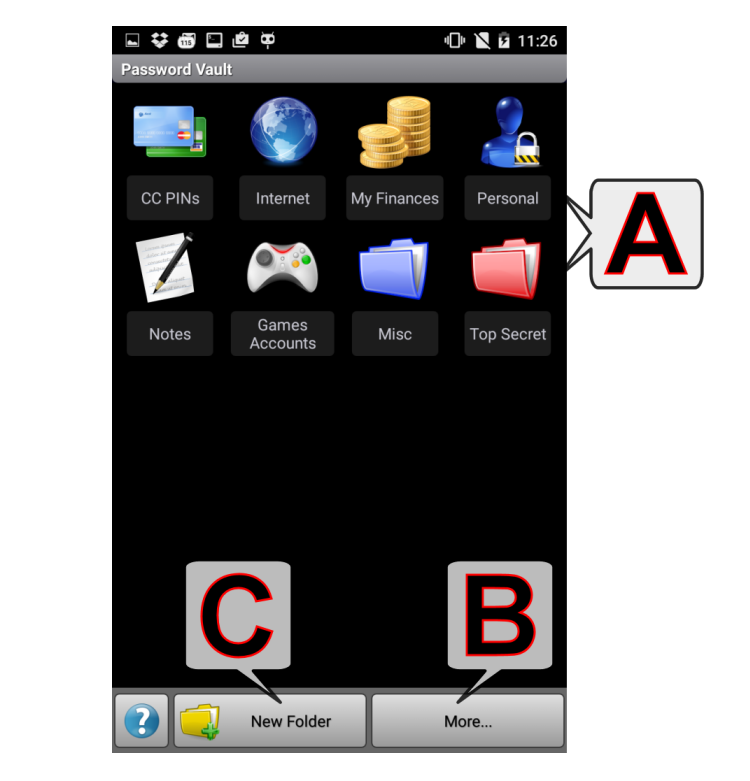
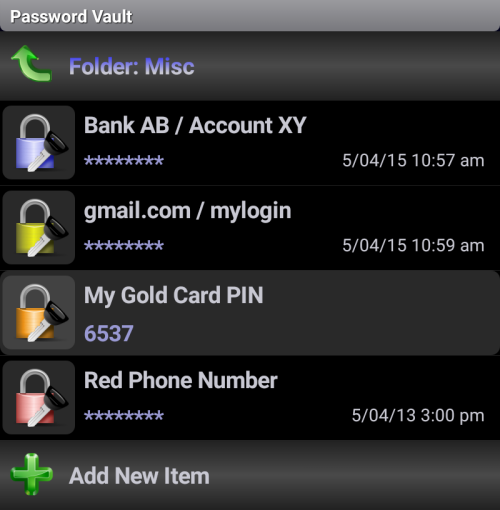
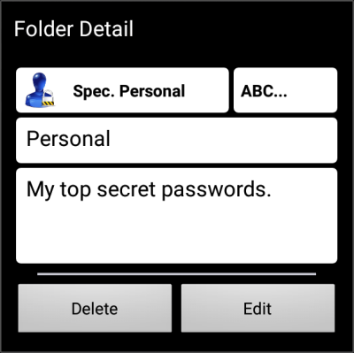

(натисніть літеру або перегорніть вниз для перегляду розділів)

A - Папки паролів
Коротке натискання на папці відкриває ваш список паролів:

Коротке натискання на элементі: Показати/Сховати пароль
Довге натискання на елементі: Показати/Редагувати параметри (заголовок, пароль, замітки та колір), Видалити/Перемістити елемент
Позначення значків:
- Копіювати в буфер обміну
- Копіювати в буфер обміну (Все/Обраний абзац - кінець абзацу за допомогою клавіші Enter)
- Генератор паролів
Довге натискання на папці: Показати/Редагувати/Видалити параметри папки (ім'я, замітка та колір)

Прив'язка позиції (Верхній правий кут): (ABC...) означає алфавітний порядок (за замовченням) - номери означають абсолютну позицію редагованої папки (примітка: Якщо ви виберете вже існуючу позицію, оригінальна папка буде замінена на редаговану, а позиція оригінальної буде автоматично встановлена на значення за замовченням (за алфавітом).)
B - Кнопка Ще
примітка: натисніть кнопку "Меню" або "Розширити" (нижній правий кут) для відображення нижнього меню
Змініть пароль: змінює "мастер" пароль для Сейфа паролів
Імпортувати сейф: імпортує дані попередньо експортованого Сейфу паролів з папки Імпорту/Експорту
Об'єднати Сейфи: об'єднати сейфи
Експортувати сейф: експортує (резервує) поточні дані Сейфу паролів в папку Імпорту/Експорту